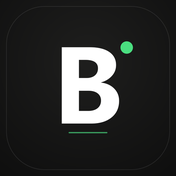
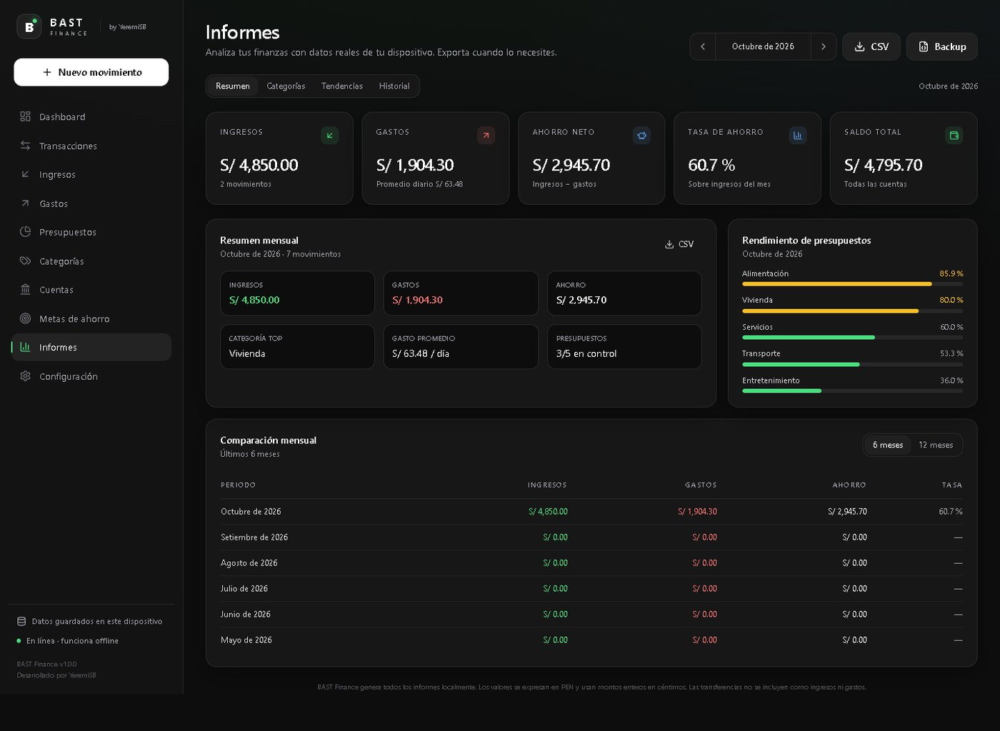

Producto propio · Finanzas personalesBAST Finance
Tus finanzas, tu control. Un gestor que guarda todo en tu dispositivo: sin cuentas, sin nube y con publicidad opcional.

El problema
La mayoría de apps de finanzas piden crear una cuenta y sincronizar todo en la nube. Otras viven de la publicidad y del rastreo. El resultado es el mismo: los datos más sensibles de una persona —cuánto gana, cuánto debe y en qué gasta— terminan en servidores que no controla.
La alternativa suele ser una hoja de cálculo: privada, sí, pero sin presupuestos que avisen, sin saldos por cuenta y sin informes que se actualicen solos.
Punto de vista: si el dato es mío, se queda en mi dispositivo. Una app de finanzas puede ser completa y privada al mismo tiempo.
La solución
Una aplicación web instalable (PWA) que funciona sin conexión después de la primera visita. No hay backend, no hay registro y no hay telemetría: cuentas, movimientos, categorías, presupuestos, transferencias y metas viven en la base de datos del navegador.
Privacidad por diseño
Sin servidor, sin cuentas de usuario ni analítica propia. La publicidad es opcional y solo se guardan en IndexedDB, en el propio dispositivo, y no se envían a ningún sitio. El respaldo JSON lo genera y lo guarda el usuario.
Dinero en céntimos enteros
Todos los montos se guardan como enteros en céntimos para evitar errores de punto
flotante. Las fechas son civiles (America/Lima), no instantes UTC: un gasto
de las 23:00 pertenece al día correcto.
Reglas que cuadran
Las transferencias mueven saldo entre cuentas pero nunca cuentan como ingreso o gasto. Los presupuestos avisan al 80 % y se marcan excedidos al 100 %. La tasa de ahorro muestra «—» cuando no hay ingresos, en vez de dividir entre cero.
Informes y respaldo
Reportes por mes, categoría y tendencia; exportación CSV; copia completa en JSON e importación con vista previa, detección de duplicados y modos combinar o reemplazar. Todo calculado localmente.

Cómo lo construí
Es un proyecto individual: diseño, frontend, modelo de datos, pruebas y despliegue. Elegí React con TypeScript porque el estado financiero es fácil de romper y los tipos ayudan a no equivocarse; y una base local porque era la única forma de prometer privacidad de verdad.
- Arquitectura: las pantallas no hablan con la base de datos, sino con repositorios. Eso permite cambiar IndexedDB por SQLite nativo sin reescribir la interfaz.
- Decisiones que evitan bugs: céntimos enteros, fechas civiles y transferencias que no alteran los totales del mes.
- Un error real que corregí: el borrado total lanzaba
Readwrite transaction in liveQuery context; lo resolví haciendo la lectura de configuración pura y el reinicio completo en una sola transacción atómica. - Pruebas: 35 pruebas unitarias y de integración, 4 pruebas end-to-end (persistencia, offline, borrado y móvil) y 80,79 % de cobertura en la capa crítica.
- Coste del proyecto: S/ 0. GitHub Pages, software libre y recursos propios.
Gratis, con publicidad opcional
La app es gratuita. Para sostenerla hay dos vías: un único anuncio de Google AdSense al final de Informes, que solo se carga si lo aceptas, y donaciones voluntarias. No hay anuncios automáticos, pop-ups ni interrupciones, y ninguna función queda bloqueada.
Si rechazas la publicidad, el script de Google no se carga y la app funciona igual. Si la aceptas, Google puede usar cookies y datos técnicos; tus movimientos, saldos y categorías nunca se envían. Puedes cambiar la preferencia en Configuración.
Donar también es opcional, no desbloquea nada y no cambia el comportamiento de la aplicación. Es la forma de monetizar sin convertir al usuario en el producto.
Offline de verdad
Service worker con Workbox: tras la primera visita, la app abre y guarda movimientos sin conexión. Es una PWA instalable desde el navegador, no una web que depende de la red.
Despliegue sin coste
El build se publica en GitHub Pages bajo una subruta, con HTTPS y rutas relativas. El código fuente es privado; el artefacto compilado es lo que se sirve.
Preguntas frecuentes
¿BAST Finance es gratis?
Sí. La aplicación es gratuita y no bloquea funciones. Se sostiene con donaciones voluntarias y un anuncio opcional al final de Informes que solo se carga si lo aceptas.
¿Funciona sin internet?
Sí. Es una PWA: después de la primera visita se puede abrir y registrar movimientos sin conexión. Los datos se guardan en el dispositivo.
¿Dónde se guardan mis datos financieros?
En la base de datos local del navegador (IndexedDB), en tu propio dispositivo. No hay servidor, no se crea una cuenta y no se envía información financiera a terceros.
¿Hay versión para Windows o Android?
Todavía no hay instaladores. El shell de escritorio y Android está preparado, pero falta compilarlo e integrar SQLite. Por ahora la versión disponible es la web.
¿Puedo mover mis datos a otro dispositivo?
Sí, con una copia de seguridad JSON: se exporta en un dispositivo y se importa en el otro. El archivo no está cifrado, así que conviene guardarlo en un lugar seguro.
Estado y lo que falta
La versión web está terminada y publicada. El shell de escritorio y Android está configurado con Tauri 2, pero todavía no se compiló: en este equipo faltan Rust, las herramientas de Visual Studio y el SDK de Android con NDK, y el adaptador SQLite nativo está pendiente. Por eso no hay .exe ni .apk todavía, y no lo presento como si los hubiera.
Nota honesta: los datos son locales, así que si borras el almacenamiento del navegador se pierden; para eso existe el respaldo JSON, que no está cifrado. La versión actual usa una sola moneda (PEN) y no sincroniza entre dispositivos, por decisión y por alcance, no por olvido.